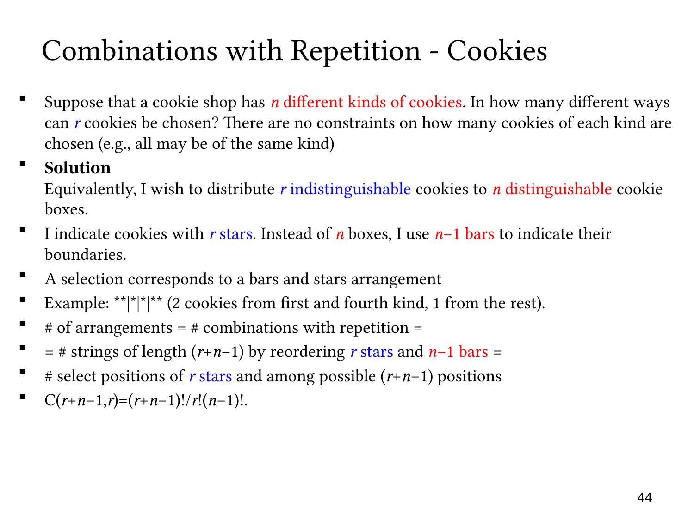

查看这一页课件

选饼干：只看每种买几块
店里有 n 种饼干，要买 r 块，每种都足够，也可以全买同一种。只看每种买了几块，不看挑选顺序，也不区分同一种里的具体哪一块。
用 r 个星号表示买的饼干，用 n−1 条隔板分出 n 种。这也像把饼干放进标有种类的盒子。例如四种饼干中，「|||」表示各买 (2,1,1,2) 块，共六块。
每种购买组合都对应唯一的星号隔板排列，所以
方法数=C(r+n−1,r)=r!(n−1)!(r+n−1)!.
上面的例子中 n=4,r=6，共有 C(9,6)=84 种。
隔板可以相邻，也可以放在开头或结尾，都表示某一种买零块，符合题意。两侧不用再加隔板，因为第一段和最后一段已经分清了。
饼干的种类虽然不同，但我们只数每种买几块，不给每一块编号。这就是 I–D 分配模型：把相同的单位分到不同的盒子里。如果改成按顺序一块块吃，并记录每块的种类，就要看先后顺序，结果是 nr 种序列。
对照原始讲解
选择饼干：类型不同，同类数量计数
饼干店有 n 种饼干，选 r 块，每类数量不限，也允许全部选择同一类。只关心购买组合，不记录挑选先后，同类饼干不按个体区分。
把 r 个选择单位作为星号，把 n 类饼干作为有标签的盒子，用 n−1 条隔板分开。例如四类饼干，编码「|||」表示数量 (2,1,1,2)，总共六块。
选择组合唯一对应星号隔板排列。因此
方法数=C(r+n−1,r)=r!(n−1)!(r+n−1)!.
对于上述 n=4,r=6，数量为 C(9,6)=84。
图式中可相邻放两条隔板，也可在开头或结尾放隔板，这些都表示某类买零块，是题目允许的情况。外侧不另放边界，因为第一段与最后一段也已明确。
“饼干种类不同”不意味着选择单位有身份。真正结果只是一组按类型排序的数量，这正是 I–D 分配模型。若改为按顺序逐块吃并记录类型，则会得到有序的 nr 个序列。